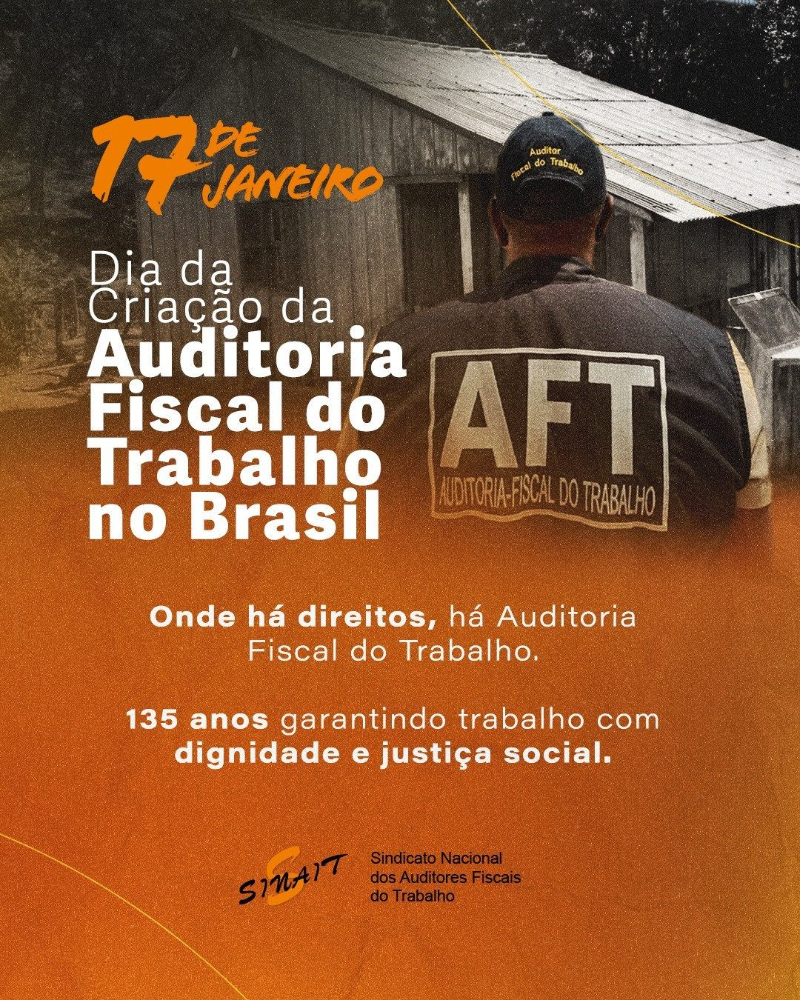
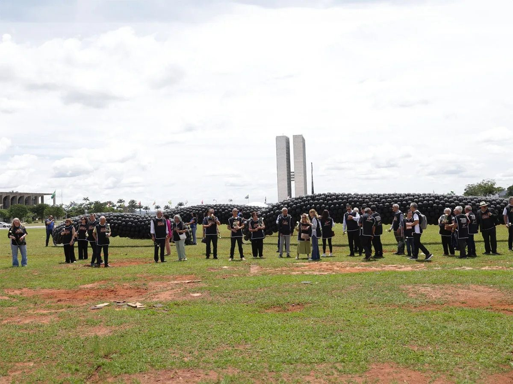
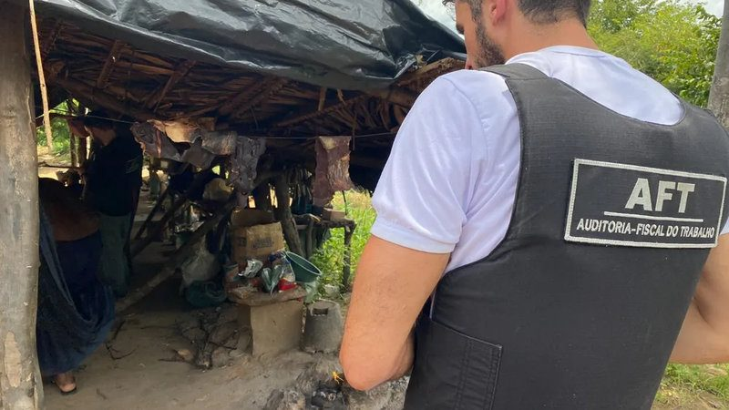
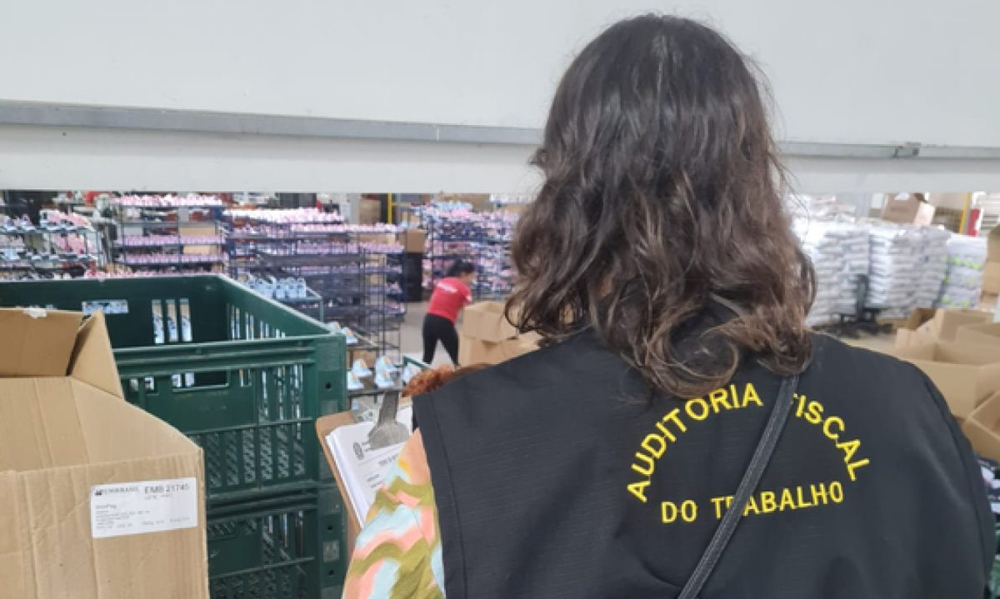
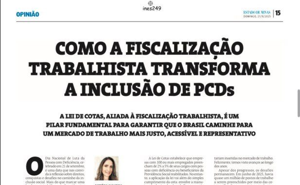

Nossas últimas notícias
Matérias, artigos e reportagens sobre a atuação da Auditoria-Fiscal do Trabalho e do sindicato em Minas Gerais e no Brasil.

Dia da criação da Auditoria-Fiscal do Trabalho. Onde há direitos, há fiscalização
Fonte: SINAITLer a matéria →Apagão no combate ao trabalho escravo: operações canceladas deixam ao menos 78 denúncias sem fiscalização, dizem auditores
Fonte: g1Ler a matéria →Memória, justiça e compromisso: por que a chacina de Unaí não pode ser esquecida
Fonte: Diário do AçoLer a matéria →
SINAIT lembra os mortos da Chacina de Unaí com ato em frente ao Ministério do Trabalho
Fonte: Revista ProteçãoLer a matéria →Pilhas de rejeito não são barragens, mas representam risco à sociedade
Fonte: Diário do AçoLer a matéria →
A autonomia da Auditoria-Fiscal do Trabalho não pode ser violada
O ministro do Trabalho decidiu avocar a competência sobre autuações feitas por Auditores-Fiscais contra a JBS Aves, suspendendo a inclusão da empresa na “lista suja”. Uma medida atípica, que abre um precedente perigoso para a autonomia da Inspeção do Trabalho.
Fonte: Diário PcDLer a matéria →
MG: mais de cem menores de idade são resgatados de fábricas de calçados
Operação coordenada pela Auditoria-Fiscal do Trabalho fiscalizou 68 fábricas em Perdigão e Nova Serrana, no Centro-Oeste de Minas Gerais.
Fonte: Estado de MinasLer a matéria →
Como a fiscalização trabalhista transforma a inclusão de PcDs
A Lei de Cotas, aliada à fiscalização trabalhista, é um pilar fundamental para um mercado de trabalho mais justo.
Fonte: Estado de MinasLer a matéria →A urgência da prevenção ao suicídio
Setembro é marcado pela cor amarela, símbolo de uma campanha que joga luz sobre um tema sensível, mas que precisa ser debatido.
Fonte: O TempoLer a matéria →Memorial Brumadinho: lembrança, reflexão e responsabilidade
Uma experiência que nos coloca frente a frente com a memória da dor e com a responsabilidade de impedir que novos desastres se repitam.
Fonte: Hoje em DiaLer a matéria →Trabalho digno: 30 anos depois
O enfrentamento ao trabalho escravo e a promoção do trabalho decente permanecem desafios centrais para o Brasil.
Fonte: BH em PautaLer a matéria →Situação análoga à escravidão no norte de Minas
Reportagem do Jornal BandMinas, a partir dos 11 minutos.
Fonte: BandMinasLer a matéria →Nenhuma notícia encontrada para essa busca.